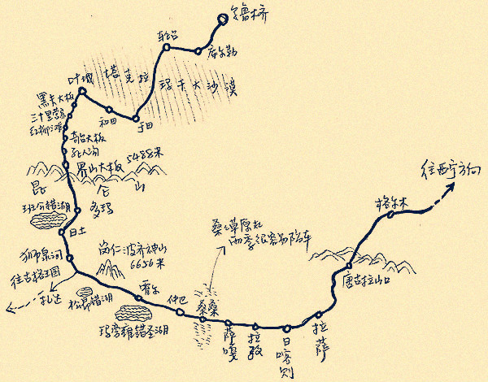
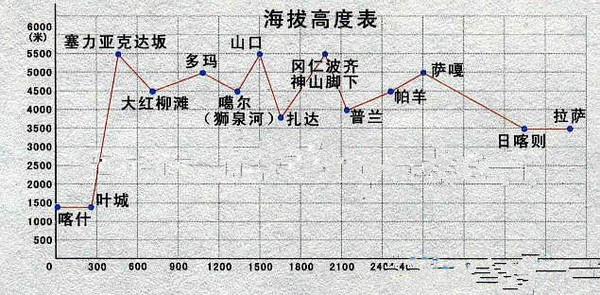

Tibet
川藏线
- [川藏线]川藏线（滇藏线）骑行攻略－图文并茂穷人版：http://www.517318.com/thread-1-1-1.html
- 川藏骑行+火车格尔木+骑车敦煌全过程(图文): http://tieba.baidu.com/p/2260281662
- [省外游]【川阅新途观 洒脱心旅程】才花1630元就从省内到省外耍了27天，你猜我是咋做到的？: http://mycd.qq.com/t-1121204-1.htm
新藏线
- 新藏线骑行攻略【By 速度哥】: http://user.qzone.qq.com/1152620609/blog/1346381838
- 骑行在天际，2012新藏圆梦: http://www.mafengwo.cn/i/922134.html


《转山》
转山影评
转山影评，什么才是真实的骑行
- 重庆李宏宇：我们不是在玩命，其实我们热爱生命，热爱生活。只是我们迷恋着路上的味道。在路上会让你突然觉得，原来坚持也是很容易的……
(2011-11-09 07:59:19)
原文：http://blog.sina.com.cn/s/blog_6343e7980100vmbr.html
刚看完，电影拍的相当不错，有个情节让哥感动了，每个骑摩车的路过主人公都要竖大拇指，哥当初在路上也是这样，在骑车荣许兵站时，很晚了，骑不动了，骑的很慢，有个骑摩托的一路陪我慢慢骑，为我护航，真心感谢那位不知名的哥们。
不过电影和实际骑行有差距，有些事要骑过才知道，有些不太真实，说几点真正的骑行经验吧，供以后的导演再拍时参考，也供准备骑车的车友参考。
- 真正的转山不是指骑滇藏线，主要是指到冈仁波齐转山，片名有点误导。
- 衣服：大太阳下不可能穿那么多衣服，一般一件快干衣加外套搞定。
- 头发：骑车出汗，头发会结块的，长期露营，没办法洗头的，主人公的头发应当不是这样的：我们是全剃了短发的光头的，省了好多麻烦。
- 头巾：主人公居然没有带头巾，在高原太阳下骑行，全是紫外线呀，一天不带头巾，脸就晒的不行了。
- 没穿骑行裤：那是骑不长久的，这是基本常识。
- 防雨罩呢，都没见到，没防雨罩怎么行呢。
- 有几个镜头主人公骑车没带手套，没带手套骑车，手要麻掉的。 我在市区骑都手麻、是这个原因？
- 磨破的部位不是那样的，你懂的。
- 绑腿一直没见到，难倒不怕裤子卷到牙盘里。
- 到拉萨时看自行车座居然是上翘的，晕死掉了，这哪可能骑久。
- 没带攻略。骑行不带攻略很惨的，露营也要基本的攻略。
- 没装码表。有个情节是不知道到目的地有多远，装了码表就知了。老驴居然也不装码表，晕死呀。
- 雨衣比冲锋衣管用多了。谁用谁知道。
- 车要装个副把，要不骑车累死。
- 后面一直不带头盔，无视骑车安全。
- 电影中的骑行镜很少见，怪怪的。
- 头灯，极少见带头灯走夜路的，都是装个电筒。
- 下怒江七十二拐没那么可怕，只要慢点，不会摔倒，还有下七十二拐时，大家下坡时要把车座调低，重心降下来，就安全多了。
- 在怒江时，看骑车时间，估计是走不出大山谷的。
- 主人公居然不带相机，卡片机也要带一个呀，骑西藏的人哪个会不带相机。
- 主人公川哥下坡时回头说话摔倒，这对有三次骑行经验的人来讲，是不太可能的， 下坡时哪个敢讲话 。
- 川哥摔倒了，书豪居然跟着也摔了，有点不对劲，前面车友摔倒，后面肯定会刹车的。
- 居然路上没碰到车友，这是不太可能的，一路上单骑的自然会结伴的。
- 排龙天险居然没有一个镜头，是不是导演也不敢在那拍了。
- 林芝那带居然没拍，尼洋河，鲁朗林海，波密的雪山，多美的风光呀。
- 跟着藏族少年做大礼拜，不对劲。晚上朝哪拜。
- 到米拉山时没可能把装备扔掉的，除非到拉萨又不洗澡了。
- 主人公到了拉萨，居然没瘦，按他的野外露营的骑行方式，肯定瘦一圈。
- 到了拉萨，车友做的事是拿单车和布达拉宫合影，不是光在那傻看。
- 那藏族少年给的是纸片吗，居然主人公在米拉口乱扔，多破坏环境呀。哪有带纸片的风俗。
- 垭口，导演是不是忘记了垭口了，那里每个车友都会停留的呀。
- 主人公第一次长途骑车，腿绝对是痛的，要恢复几天的。
- 主人公上坡也骑的太快了吧，真正的骑车上坡都象放慢动作。
-
川鳩亜回复
4. 头巾：主人公居然没有带头巾，在高原太阳下骑行，全是紫外线呀，一天不带头巾，脸就晒的不行了。 5. 没穿骑行裤：那是骑不长久的，这是基本常识。 6. 防雨罩呢，都没见到，没防雨罩怎么行呢。 12. 没装码表。有个情节是不知道到目的地有多远，装了码表就知了。老驴居然也不装码表，晕死呀。 这些不一定要，至少，我就没带！老驴是不装码表的，可以按照齿比算出速度！ 13. 雨衣比冲锋衣管用多了。谁用谁知道。 14. 车要装个副把，要不骑车累死。 这个我们也没有！！ 30. 那藏族少年给的是纸片吗，居然主人公在米拉口乱扔，多破坏环境呀。哪有带纸片的风俗。 在垭口放这个，是风俗习惯····基本都是在垭口放得···
骑行看点
滇藏线、川藏线骑行看点
- 从丽江出发的，过奔子栏、香格里拉、德钦、飞来寺、盐井、芒康、邦达、林芝、墨竹工卡到拉萨，一共骑行了15天半，沿途翻越了7座垭口在5000米以上的雪山。
- 白马雪山：海拔5460米，滇藏线出发遇见的第一座雪山，在公路垭口的左手边。
- 梅里十三峰：滇藏线上最漂亮的景观，最佳观赏点是德钦城外的飞来寺，主峰是6740米的卡瓦格博，一字排开的还有缅茨姆峰（仙女峰）、五冠峰等。
- 海子山姊妹湖：川藏线上第一眼惊艳，在理塘到巴塘途中海子山垭口下，冬春季一片冰封，夏天湖水一汪蔚蓝。
- 72道拐：滇藏线和川藏线在芒康汇合后，从邦达到八宿途中翻越的业拉山上一道著名景观，坡陡弯多。
- 然乌湖：川藏线上遇到的最大湖泊，四周是雪山，还有著名的米堆冰川。
- 通麦天险：可以见到架在易贡藏布江上的两座桥梁，一座被泥石流冲毁。
- 南迦巴瓦：翻越色季拉山的途中，有一个观景台，如果天气晴好，可以看到海拔7782米的南迦巴瓦峰。
- 林芝：号称西藏江南，海拔仅2900米，绿水青山，蓝天白云，气候湿润。镇外有一座吊桥，从桥上过去就是徒步去墨脱的山路。
骑行西藏攻略
- 骑行去西藏，除骑行服、防寒防水服装、露营装备、医药卫生用品、摄影器材和购买保险之外，最重要的是跟自行车有关的装备，是它们把你安全带到西藏。
- 自行车，推荐1000元以上的山地车。
- 自行车V刹货架（或碟刹货架）、挡泥板、水壶架2、普通码表、车前电筒或高亮车前电筒。
- 修车套装、补胎套装、轻便打气筒。
- 自行车三合一驮包，橡胶绑绳3根。
- 备用零件包括刹车线及变速线套装，内胎、刹车皮2对（碟刹兰令片2对）。
- 备用螺丝若干、备用铁丝（无合适螺丝时用于连接)、链条油等。
成都至稻城亚丁
http://www.700bike.com/17193.html
2012年9月22日~10月7日 成都至稻城亚丁。全程约770KM，时间共16天，其中用11天时间骑行，2天机动安排，3天作大巴往返回之用。
行程：
- Day1. 雅安 → 始阳 → 天全 → 新沟（海拔1310） 分段里程：90公里
- Day2. 新沟 → 二郎山隧道（海拔2170） → 泸定(海拔1330) 分段里程：54公里
- Day3. 泸定 → 瓦斯 → 康定(海拔2395) 分段里程：50公里
- Day4. 康定 → 折多山口(海拔4298) → 新都桥(海拔3630) 分段里程：75公里
- Day5. 新都桥 → 高尔寺山口(海拔4270) → 雅江（海拔 2530）分段里程：72公里
- Day6. 雅江 → 剪子湾山口(海拔4450) → 119道班（海拔 4260）分段里程：52公里
- Day7. 119道班 → 卡子拉山（海拔4440） → 理塘(海拔3968) 分段里程：110公里
- Day8. 理塘 → 扎嘎山（海拔4130米） → 兔儿山（海拔4640米） → 75道班（海拔4360米）分段里程：75公里
- Day9. 75道班 → 海子山（4610米） → 桑堆乡（海拔3940） → 稻城 分段里程：70公里
- Day10. 稻城 → 日瓦（海拔3000+） 分段里程：34公里
- Day11. 日瓦 →亚丁（海拔3000+） 分段里程：77公里